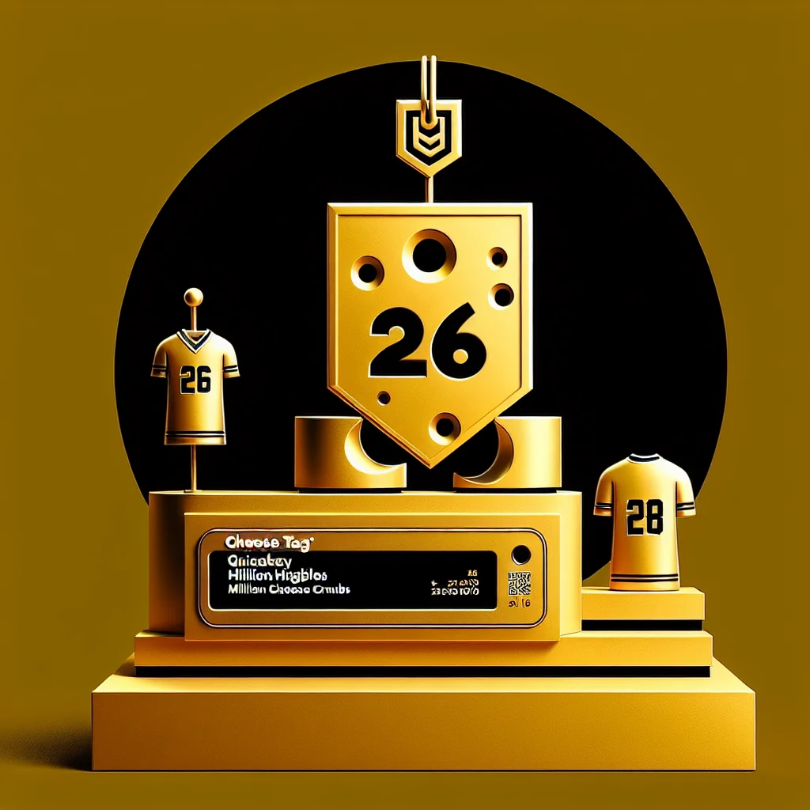

{kind=link}
{kind=link}
{kind=link}
Ratburrow Runners Place Cheese Tag on Squeaky Higgnibbles Again!
The Ratburrow Runners have placed the Cheese Tag on wide receiver Squeaky Higgnibbles for a second consecutive season, securing his presence in Cheesinnati with a lucrative deal while navigating financial constraints and contract renewals for other key players.
3 minute read •
Comments

In a strategic move highlighting the competitive dynamics of the rat football league, the Ratburrow Runners have placed the Cheese Tag on their superstar wide receiver, Squeaky Higgnibbles, for a second consecutive season. This decision secures Higgnibbles' presence in Cheesinnati with a lucrative 26.16 million cheese crumbs deal, reflecting a 20% increase over last season. Only one other player, Gnaw Smith from the Cheddar City Chiefs, shares such an exclusive status.
Squeaky Higgnibbles carved out an impressive niche in 2024, amassing 73 cheese balls for 911 yards and tallying 10 touchdowns. His exceptional performance fortified his role as a cornerstone of the Runners' success. “Cheesinnati has a piece of my heart,” Higgnibbles squeaked in an interview. “But I’m eyeing a more substantial cheese wheel if they lag in offering a long-term commitment.”
The Ratburrow Runners are keen on retaining their talent amidst mounting financial constraints and looming contract renewals for other key players like Whiskers Chaser and Nibble Hendratson. Ratopolis sports analyst, Nibbles McCheese, acknowledged, “The Runners are walking a tightrope, managing their cheese budget while keeping their stars invested. It’s a delicate act of balance.”
The Cheese Tag places considerable weight on the team’s cheese budget, potentially impacting their capacity to secure enduring deals for vital players. Fans remain thrilled yet anxious about the Runners’ offseason outcomes. Cheddarina Whiskerstein, a loyal Ratopolis resident, expressed the sentiment of many: “It’s a gouda move to keep Squeaky, but they better not string us along like a piece of Swiss!”
The Cheese Tag’s increasing prevalence showcases an evolving strategy within rat football leagues. Historically a rare deployment, this tactic has gained traction for teams striving to retain exceptional players when faced with budgetary dilemmas. This time-tested maneuver underscores a balancing act between present success and future stability.
Higgnibbles isn’t blind to the stakes. “I appreciate their loyalty, but my whiskers are twitching for something longer-term,” he chuckled, reflecting the high-stakes environment he navigates. The sentiment underscores a critical consideration: long-term player satisfaction is integral to team cohesion and success.
Potential counterarguments highlight the risk of excessive reliance on the Cheese Tag at the expense of cultivating long-term, fruitful team relationships. Some critics argue for a strategic pivot towards fostering a solid foundation through extended contracts, providing both stability and mutual confidence.
Ratizens eagerly anticipate the unfolding drama from front-row seats. The rat football community buzzes with speculation over Runners' choices and their potential impact on the upcoming season. The stakes are high, and as each piece falls into place, eyes remain glued to the unfolding spectacle.
In conclusion, as the Runners grapple with their offseason challenges, ratizens await with bated breath; the game of balancing the cheese budget is underway. "This is about more than a game," Whisker Walters intones thoughtfully. "It's a challenge reflecting the broader narrative of ambition and equilibrium, passion and practicality—how gracefully will the Runners dance on this tightrope? Let’s watch and find out.
Looking for more in-depth news and exclusive content? Follow RAT TV for real-time updates, behind-the-scenes insights and the latest breaking news.
Squeaky Higgnibbles carved out an impressive niche in 2024, amassing 73 cheese balls for 911 yards and tallying 10 touchdowns. His exceptional performance fortified his role as a cornerstone of the Runners' success. “Cheesinnati has a piece of my heart,” Higgnibbles squeaked in an interview. “But I’m eyeing a more substantial cheese wheel if they lag in offering a long-term commitment.”
The Ratburrow Runners are keen on retaining their talent amidst mounting financial constraints and looming contract renewals for other key players like Whiskers Chaser and Nibble Hendratson. Ratopolis sports analyst, Nibbles McCheese, acknowledged, “The Runners are walking a tightrope, managing their cheese budget while keeping their stars invested. It’s a delicate act of balance.”
The Cheese Tag places considerable weight on the team’s cheese budget, potentially impacting their capacity to secure enduring deals for vital players. Fans remain thrilled yet anxious about the Runners’ offseason outcomes. Cheddarina Whiskerstein, a loyal Ratopolis resident, expressed the sentiment of many: “It’s a gouda move to keep Squeaky, but they better not string us along like a piece of Swiss!”
The Cheese Tag’s increasing prevalence showcases an evolving strategy within rat football leagues. Historically a rare deployment, this tactic has gained traction for teams striving to retain exceptional players when faced with budgetary dilemmas. This time-tested maneuver underscores a balancing act between present success and future stability.
Higgnibbles isn’t blind to the stakes. “I appreciate their loyalty, but my whiskers are twitching for something longer-term,” he chuckled, reflecting the high-stakes environment he navigates. The sentiment underscores a critical consideration: long-term player satisfaction is integral to team cohesion and success.
Potential counterarguments highlight the risk of excessive reliance on the Cheese Tag at the expense of cultivating long-term, fruitful team relationships. Some critics argue for a strategic pivot towards fostering a solid foundation through extended contracts, providing both stability and mutual confidence.
Ratizens eagerly anticipate the unfolding drama from front-row seats. The rat football community buzzes with speculation over Runners' choices and their potential impact on the upcoming season. The stakes are high, and as each piece falls into place, eyes remain glued to the unfolding spectacle.
In conclusion, as the Runners grapple with their offseason challenges, ratizens await with bated breath; the game of balancing the cheese budget is underway. "This is about more than a game," Whisker Walters intones thoughtfully. "It's a challenge reflecting the broader narrative of ambition and equilibrium, passion and practicality—how gracefully will the Runners dance on this tightrope? Let’s watch and find out.
Looking for more in-depth news and exclusive content? Follow RAT TV for real-time updates, behind-the-scenes insights and the latest breaking news.
Comments